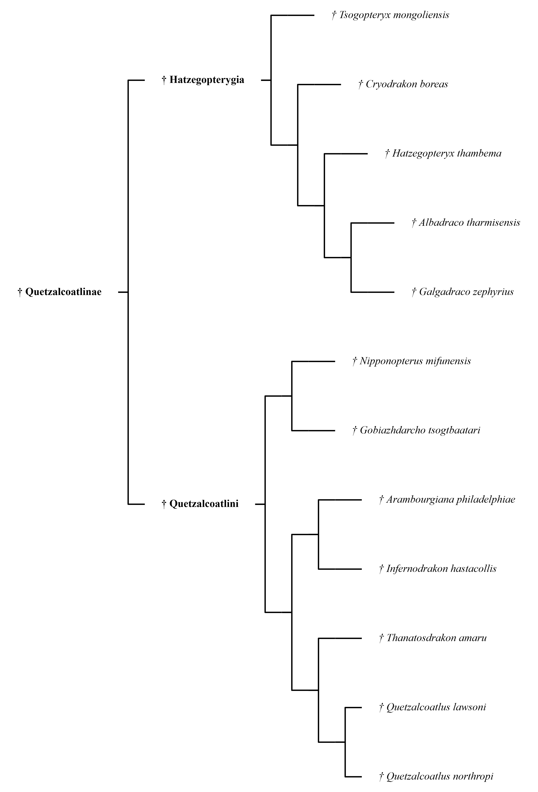

Mise en page
Layout
Trois façons de dessiner le même arbre
Three ways to draw the same tree
La topologie ne change pas ; seule la lecture change. On bascule d'un mode à l'autre sans retoucher les données.
The topology never changes, only the reading of it. Switch between modes without touching the data.

Topologie seule
Topology only
Branches d'égale longueur : seul l'ordre de ramification est représenté. C'est le mode standard.
Branches of equal length: only the branching order is shown. This is the standard mode.

Disposition en peigne
Comb layout
Pour les longues séries de taxons : les feuilles s'alignent, les cadres regroupent les clades.
For long series of taxa: leaves line up and frames group the clades.
Calé sur le temps
Anchored in time
Les branches suivent les dates saisies. Datez la racine d'une famille : les divergences intermédiaires se répartissent seules.
Branches follow the dates you enter. Date the root of a family and the intermediate divergences space themselves out.